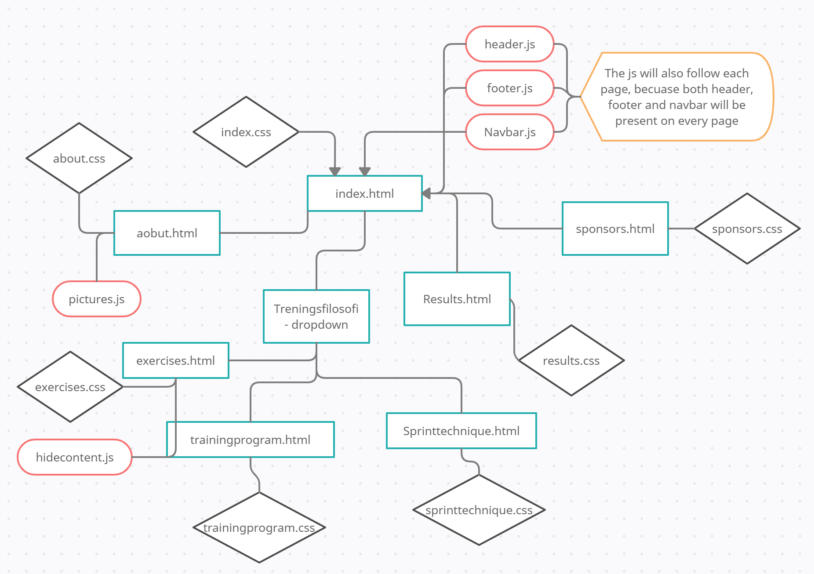

Administrative detaljer
- Klientens navn: Team Sprint
- Kontaktpersoner: Arne Skuterud (trener) & Carina Jagtøyen
Formål, hensikt og målgruppe
Norge har lange tradisjoner innen langdistanse på skøyter. Derfor ønsker Team Sprint å øke kunnskap om, og inspirere norske trenere og unge skøyteløpere til å spesialisere seg innen sprint. Dette vil være hovedhensikten med nettsiden. Hovedmålet med nettsiden er å lage en plattform der Team Sprint kan dele deres kunnskap om sprinttrening. Dette vil oppnås ved å publisere treningsprogram, øvelser, og tanker om sprintteknikk. Brukeren skal ha mulighet til å se videoer der øvelsene i treningsprogrammene blir introdusert. Et annet mål med nettsiden er å presentere Team Sprints arbeid og mål, en kort introduksjon av hver deltager og trener, i tillegg til oppdateringer fra konkurranser og treningssamlinger. Et siste mål er å skape en plattform med informasjon for flere potensielle sponsorer, i tillegg til å promotere nåværende sponsorer. Dette vil gjøres gjennom å vise frem bilder og videoer som viser sponsorprodukter og logoer. I tillegg vil det være en kort beskrivelse av hver sponsor, i tillegg til Team Sprints kontaktinformasjon.
Navigasjons struktur
Filstrukturen er en blanding mellom hierakisk og lineær. Hovedsiden, index.html er hjemmesiden du vil føres til når en går inn på siden. Herfra vil du kunne få tilgang til alle siden gjennom navbaren. Du vil alltid kunne gå tilbake til hjemmesiden gjennom å trykke på logoen i headeren, slik som på mange andre nettsider. Du vil alltid også ha tilgang til alle andre sider gjennom navbaren øverst på siden, som alltid er synlig.
Bildet er en illustrasjon slik siden skal forståes av en bruker
Sidelayout og utseende
I arbeidet med å skape et universelt design for nettstedet, har vi fokusert spesielt på målet om å inspirere og øke kunnskapen til norske trenere og utøvere om sprint på skøyter. Designet spiller en viktig rolle i å gi brukerne et godt førsteinntrykk og en god brukeropplevelse, og med tanke på at nettstedet skal kunne brukes som et verktøy for trenere og utøvere, har vi endt opp med et enkelt design som gjør det lett å finne fram til de sidene man leter etter.
Navigasjons-baren som er festet øverst på hver side, gjør det mulig å klikke seg inn på alle sidene i nettstedet, uavhengig av hvilken side man befinner seg på. Kategorien "Treningsfilosofi" med de tre underkategoriene "Treningsprogram", "Øvelser" og "Sprintteknikk", vil tilfredsstille behovet om inspirasjon til øvelser og hjelp til tekniske detaljer for målgruppen som består av trenere og utøvere. Kategoriene "Om oss" og "Resultater" vil være nyttige for de brukerne som er interesserte i å bli bedre kjent med og følge utviklingen til utøverne i Team Sprint. Nederst på hver side finner man logoene til Team Sprints sponsorer, kontaktinformasjonen til Team Sprint, samt linker til deres Facebook- og Instagram-konto. Dette sammen med siden "Våre sponsorer" vil være tilfredsstillende for deres nåværende sponsorer, samt gjøre Team Sprint mer attraktive for potensielle sponsorer.
Team Sprint ønsker at det universelle designet skal være enkelt, men gjenkjennbart og helhetlig. På bakgrunn av disse ønskene har vi valgt å ta utgangspunkt i logoen til Team Sprint når det kommer til fargevalg og fonter, samt bruke bilder av skøyter som bakgrunn på noen utvalgte sider.
Følgende spesifikke krav til design skal gjelde for alle sidene i nettstedet:
- Fonter: "Eras Demi ITC", slik som Team Sprints logo, for de større overskriftene i nettstedet (32 pt), og "Arial" for alt av tekst i body (16 pt) og footer (14 pt). "Roboto" skal brukes i navigasjons-baren og i menyene (18 pt).
- Fargeskjema:
- Tekst: Blå (#033EA7) på større overskrifter, hvit (#FFFFFF) i nav-bar og i footer, og mørk brun (#414141) på alt av tekst i body, dropdown-meny og vertikal tab-meny.
- Banner og footer: Blå (#033EA7)
- Banner og footer: Blå (#033EA7)
- Dropdown-meny og vertikal tab-meny: Hvit (#FFFFFF) bakgrunn, som skifter til lys grå (#E6E6E6) når man holder musen over en bestemt tab.
- Dropdown-meny og vertikal tab-meny: Hvit (#FFFFFF) bakgrunn, som skifter til lys grå (#E6E6E6) når man holder musen over en bestemt tab.
- Bakgrunnsbilder: På sidene "Om oss", "Treningsprogram", "Øvelser" og "Sprintteknikk" skal den hvite bakgrunnen byttes ut med tre henholdsvis ulike bilder av skøyter. Disse bildene skal ha 18% ugjennomsiktighet (opacity), slik at de ikke stjeler for mye fokus fra innholdet på sidene.
- Linker: Team Sprint-logoen i banneret vil være en klikkbar link som tar brukeren tilbake til hjem-siden. Navigasjons-baren, inkludert dropdown-menyen, inneholder linker til de respektive sidene i nettstedet. Sponsorlogoene nederst på hver side vil være klikkbare linker til hjemmesidene til de respektive sponsorene (disse åpnes i nye faner). Noen utvalgte øvelser i treningsprogrammene vil være linket til tilhørende videoer i siden "Øvelser", dermed skal "Øvelser" åpnes i en ny fane når brukeren klikker på navnet til den aktuelle øvelsen i treningsprogrammet.
- Navigasjons-bar: Navigasjons-baren vil være inkludert i banneret øverst på hver side. Når man holder musen over en bestemt tab skal den blå bakgrunnen skifte til en mørkere blåfarge (#00225E). Denne mørke blåfargen skal også være bakgrunnen til den aktive siden.
- Banner: Banneret vil bestå av en blå bakgrunn (#033EA7) med Team Sprint sin hvite logo (#FFFFFF) plassert helt til venstre, slik som vist øverst på mockup-bildet, og navigasjons-baren til høyre for logoen.
- Footer: E-post: mail@teamsprint.no og tlf.: +47 90926315. Instagramkonto: @team_sprint og Facebookkonto: @teamsprintskoyter.
Innhold
Nettstedet vil bestå av de følgende syv separate sidene:
- Hjem - index.html
Hjem-siden vil være det første brukerne møter når de besøker nettsiden til Team Sprint, det er derfor viktig at denne siden fanger interessen til besøkende. Dette skal vi oppnå ved å unngå å overfylle siden med informasjon, men heller skape et blikkfang. Førsteinntrykket av hjem-siden skal være at den er ryddig, gjenkjennbar og spennende.
Hjem-siden vil derfor hovedsaklig inneholde en promovideo av Team Sprint, som skal gi besøkende et inntrykk av hva skøytelaget driver med. Videoen skal være midtstilt og dekke 80% av bredden til skjermen den vises på. Videoen skal spilles av automatisk, men uten lyd, når besøkende kommer inn på siden.
Under promovideoen kommer en seksjon med overskriften "Sjekk ut vår Instagram" og tre innebygde Instagram-innlegg (DIMENSJONER) hentet fra lagets Instagram-bruker. Overskriften skal være justert mot venstre og plassert 10% av skjermens bredde fra venstre kant. En horisontal linje skiller overskriften fra Instagram-innleggene under.
På denne måten vil hjem-siden bidra til å nå målet om å inspirere trenere og utøvere til å ville utforske sprint på skøyter. Ved å holde innholdet til et minimum og spille av en video som utstråler idrettsglede, fart og spenning, vil vi kunne friste besøkende til å sjekke ut de andre sidene som ligger i navigasjons-baren. Instagram-innleggene vil være en fin måte å holde skøyteentusiaster oppdaterte på hva Team Sprint driver med for tiden. - Om oss - about.html
Dette vil være siden som introduserer Team Sprint og hver enkelt utøver (og trener).
Siden starter med overskriften "Team Sprint", etterfulgt av en kort introduksjon av laget, deres arbeid og målsettinger. Overskriften og teksten skal være midtstilt på siden, der teksten er justert mot venstre. Det vil også være en horisontal linje under overskriften som skiller teksten og overskriften.
Under introduksjonen av laget kommer introduksjonen av treneren og utøverne. Overskriften er "Vårt Team" etterfulgt av en horisontal linje som skiller overskriften og innholdet. Deretter følger et portrettbilde (DIMENSJONER) av hver utøver med tilhørende navn under. På første linje vil det være to portretter, og på andre linje vil det være tre portretter. Bildene og navnene vil være midtstilt på siden, med passende mellomrom mellom hvert bilde. - Treningsprogram - trainingprogram.html
- Øvelser - exercises.html
- Sprintteknikk - sprinttechnique.html
- Resultater - results.html
- Våre sponsorer - sponsors.html
Minimumskrav
Styling av nettsiden:
- Font:
- Farger:
- Navbar:
- Footer:
- Logo:
Plan
Organiseringsplan
Liste over filer og mapper:
- homepage.html
- about.html
- training.html
- results.html
- sponsors.html
- style.css
Arbeidsfordeling og frister
| Filnavn | Beskrivelse | Ansvarlig | Frist |
|---|---|---|---|
| header.js | Javascript til header | Sara | 22/10/21 |
| footer.js | Javascript til footer | Sara | 22/10/21 |
| hidecontent.js | Javascript til visning av treningsøvelser | Sixten | 22/10/21 |
| index.html | Startsiden til Team Sprint | Petter | 15/10/21 |
| index.css | index.html stil | Petter | 15/10/21 |
| about.html | Om Team Sprint som lag | Ine | 18/10/21 |
| about.css | about.html stil | Ine | 18/10/21 |
| pictures.js | Sprettopp av utøvere sin presentasjon | Ine | 22/10/21 |
| exercises.html | Treningsøvelser av Team Sprint | Sixten | 18/10/21 |
| exercises.css | execises.html stil | Sixten | 18/10/21 |
| trainingprogram.html | Team Sprints treningsprogram | Carina | 18/10/21 |
| trainingprogram.css | trainingprogram.html stil | Carina | 18/10/21 |
| sprinttechnique.html | Sprintteknikker i skøyting av Team Sprint | Sara | 18/10/21 |
| sprinttechnique.html | sprinttechnique.html stil | Sara | 18/10/21 |
| results.html | Tidligere resultater for Team Sprint | Petter | 18/10/21 |
| results.css | results.html stil | Petter | 18/10/21 |
| sponsors.html | Team Sprints sponsorer presentasjon | Petter | 20/10/21 |
| sponsors.css | sponsors.html stil | Petter | 21/10/21 |
| Siste sjekk |